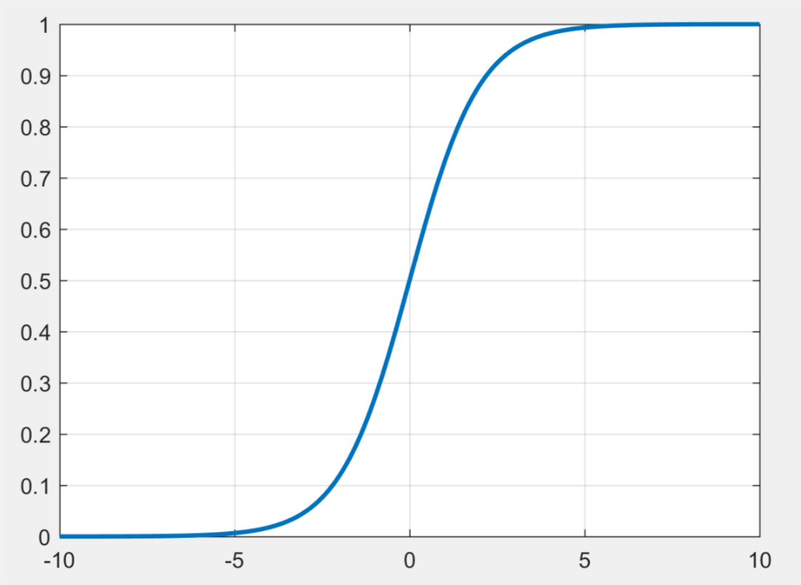

指数分布家族
1 简介
我们学习的大多数分布都可以归类于更general的一个家族：exponential家族。在exponential的框架下，这些分布都具有同一的表现形式：
\begin{equation} \label{eq:1} p(\mathbf{x}| \eta) = h(\mathbf{x}) g(\mathbf{\eta})\exp\{\mathbf{\eta}^{T}\mathbf{u}(\mathbf{x})\} \end{equation}其中\(\mathbf{x}\)可以是矢量也可以是标量，可以连续亦可离散。\(\mathbf{\eta}\)是分布的自然参数，\(\mathbf{u}(\mathbf{x})\)是\(\mathbf{x}\)的函数，\(g(\mathbf{\eta})\)用来保证分布归一化，即：
\begin{equation} \label{eq:2} g(\mathbf{\eta})\int h(\mathbf{x}) \exp\{\mathbf{\eta}^{T}\mathbf{u}(\mathbf{x})\} \mathrm{d}\mathbf{x}=1 \end{equation}当\(\mathbf{x}\)是离散随机变量时，上式的积分变为求和。
2 例子
我们尝试把一些常见的分布归类到式 (\ref{eq:1})所示的exponential家族中。
2.1 伯努利分布
伯努利分布：
\begin{equation} \label{eq:3} p(x|\mu) = \mu^{x}(1-\mu)^{1-x} \end{equation}把式 (\ref{eq:3})的右端写成指数的形式，有：
\begin{eqnarray} \label{eq:4} p(x|\mu)&=& \exp\{ x\ln \mu + (1-x)\ln (1-\mu) \} \\ &=& (1-\mu)\exp\{ \ln(\tfrac{\mu}{1-\mu}) x \} \end{eqnarray}对比式 (\ref{eq:1})，我们有：
\begin{eqnarray} \label{eq:5} \eta&=& \ln (\tfrac{\mu}{1-\mu}) \end{eqnarray}我们可以通过\(\mu=\sigma(\eta)\)求出\(\mu\)，其中\(\sigma(\eta)\)是：
\begin{equation} \label{eq:6} \sigma(\eta) = \frac{1}{1+\exp(-\eta)} \end{equation}式 (\ref{eq:6})所示的函数叫做logistic sigmoid函数，这个函数的形状像一个“S”曲线。

图 1: logistic sigmoid函数形状
根据以上的分析我们把伯努利分布和指数家族的式子对应起来，有：
\begin{eqnarray} \label{eq:7} u(x)&=&x \\ h(x)&=&1 \\ g(\eta)&=&\sigma(-\eta) \end{eqnarray}2.2 多项分布
多项分布，对于\(\mathbf{x}\)的一次观测，有：
\begin{equation} \label{eq:8} p(\mathbf{x}|\mathbf{\mu}) = \prod_{k=1}^{M}\mu_{k}^{x_{k}} = \exp\bigg\{ \sum_{k=1}^{M}x_{k}\ln \mu_{k}\bigg\} \end{equation}因此，我们可以把式 (\ref{eq:8})写成式 (\ref{eq:1})的形式：
\begin{equation} \label{eq:9} p(\mathbf{x}|\mathbf{\eta}) = \exp(\mathbf{\eta}^{T}\mathbf{x}) \end{equation}其中\(\eta_{k}=\ln \mu_{k}\)，对比式(\ref{eq:8})和式 (\ref{eq:1})，有：
\begin{eqnarray} \label{eq:10} \mathbf{u}(\mathbf{x}) &=& \mathbf{x} \\ h(\mathbf{x}) &=& 1 \\ g(\mathbf{\eta}) &=& 1 \end{eqnarray}注意\(\eta_{k}\)不是互相独立的，因为\(\sum_{k=1}^{M}\mu_{k} = 1\)。
2.3 高斯分布
高斯分布：
\begin{eqnarray} \label{eq:11} p(x|\mu,\sigma^{2})&=& \frac{1}{(2\pi\sigma^{2})^{1/2}}\exp\bigg\{ -\frac{1}{2\sigma^{2}} (x-\mu)^{2} \bigg\} \\ &=& \frac{1}{(2\pi\sigma^{2})^{1/2}} \exp\bigg\{ -\frac{1}{2\sigma^{2}}x^{2} + \frac{\mu}{\sigma^{2}}x - \frac{1}{2\sigma^{2}}\mu^{2} \bigg\} \end{eqnarray}经过一些化简，我们仍然可以把式 (\ref{eq:11})写成和式~(\ref{eq:1})相同的形式：
\begin{eqnarray} \label{eq:12} \mathbf{\eta}&=& \begin{bmatrix} \mu/\sigma^{2} \\ -1/2\sigma^{2} \end{bmatrix} \\ \mathbf{u}(x) &=& \begin{bmatrix} x \\x^{2} \end{bmatrix} \\ h(\mathbf{x}) &=& (2\pi)^{-1/2} \\ g(\mathbf{\eta}) &=& (-2\eta_2)^{1/2} \exp (\frac{\eta_1^2}{4\eta_2}) \end{eqnarray}3 最大似然估计和充分统计量
接下来我们考虑使用最大似然估计法来估计式 (\ref{eq:1})中 \(\mathbf{\eta}\)的问题。我们对式 (\ref{eq:2})两端相对于\(\mathbf{\eta}\)求梯度，则有：
\begin{eqnarray} \label{eq:13} &&\nabla g(\mathbf{\eta}) \int h(\mathbf{x}) \exp \{ \mathbf{\eta}^{T} \mathbf{u}(\mathbf{x})\}\mathrm{d}\mathbf{x} \\ &+& g(\mathbf{\eta})\int h(\mathbf{x})\exp\{ \mathbf{\eta}^{T}\mathbf{u}(\mathbf{x}) \} \mathbf{u}(\mathbf{x})\mathrm{d}\mathbf{x} = 0 \end{eqnarray}利用式 (\ref{eq:2})，有：
\begin{equation} \label{eq:14} -\frac{1}{g(\mathbf{\eta})} \nabla g(\mathbf{\eta}) = g(\mathbf{\eta})\int h(\mathbf{x})\exp\{ \mathbf{\eta}^{T}\mathbf{u}(\mathbf{x}) \} \mathbf{u}(\mathbf{x})\mathrm{d}\mathbf{x} = \mathbb{E}[\mathbf{u}(\mathbf{x})] \end{equation}所以有：
\begin{equation} \label{eq:15} -\nabla \ln g(\mathbf{\eta}) = \mathbb{E}[\mathbf{u}(\mathbf{x})] \end{equation}现在考虑一组独立同分布的数据\(\mathbf{X}= \{\mathbf{x}_{1},\ldots ,\mathbf{x}_{n}\}\),其似然函数为：
\begin{equation} \label{eq:16} p(\mathbf{X} | \mathbf{\eta}) = \bigg(\prod_{n=1}^{N}h(\mathbf{x}_{n})\bigg)g(\mathbf{\eta})^{N}\exp\bigg\{ \mathbf{\eta}^{T} \sum_{n=1}^{N}\mathbf{u}(\mathbf{x}_{n})\bigg\} \end{equation}把\(\ln p(\mathbf{X}|\mathbf{\eta})\)对\(\mathbf{\eta}\)求导，并令导数为零，则有：
\begin{equation} \label{eq:17} -\nabla \ln g(\mathbf{\eta}_{ML}) = \frac{1}{N}\sum_{n=1}^{N}\mathbf{u}(\mathbf{x}_{n}) \end{equation}利用上式，我们发现求解\(\mathbf{\eta}_{ML}\)的过程中，我们只需要求出\(\sum_{n}\mathbf{u}(\mathbf{x}_{n})\)即可，这个量就叫做式 (\ref{eq:1})的充分统计量。我们不需要存储整个数据集合，只需要存储充分统计量即可。对于伯努利分布，我们只需要存储\(x\)的和，对于高斯分布我们需要存储\(\{x_{n}\}\)和\(\{x_{n}^{2}\}\)的和。当\(N\to \infty\)时，对于式 (\ref{eq:17})右端变为\(\mathbb{E}[\mathbf{u}(\mathbf{x})]\)对比式(\ref{eq:17})和式 (\ref{eq:15})我们发现，当\(N\to \infty\)时，\(\mathbf{\eta}_{ML} = \mathbf{\eta}\)